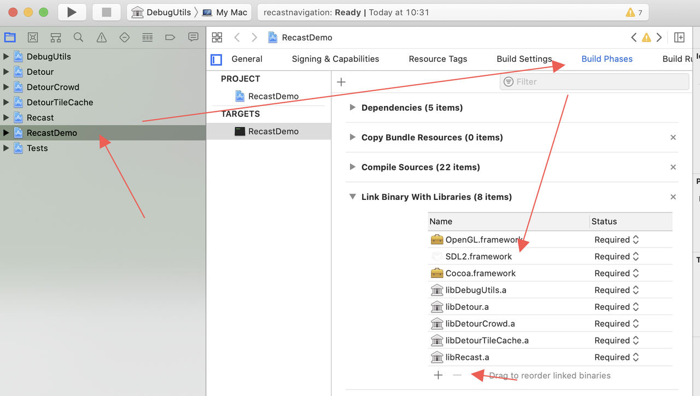
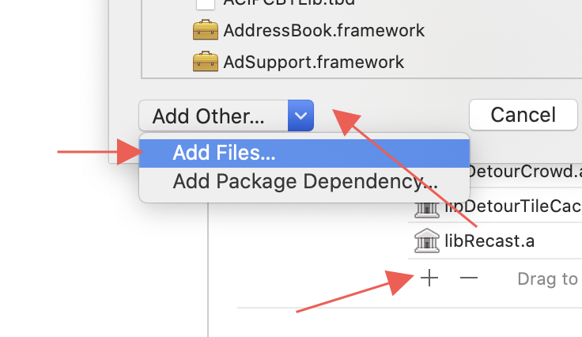
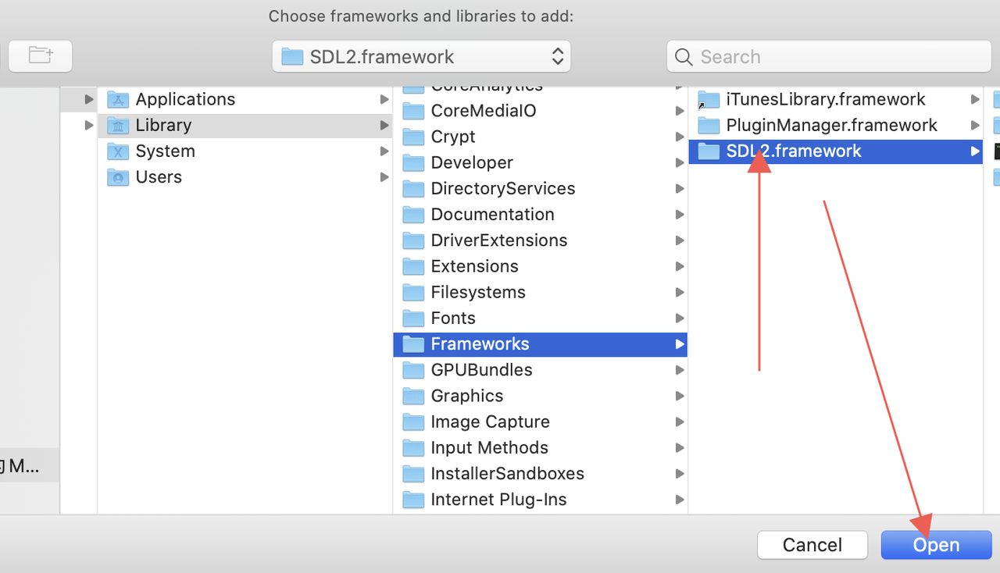
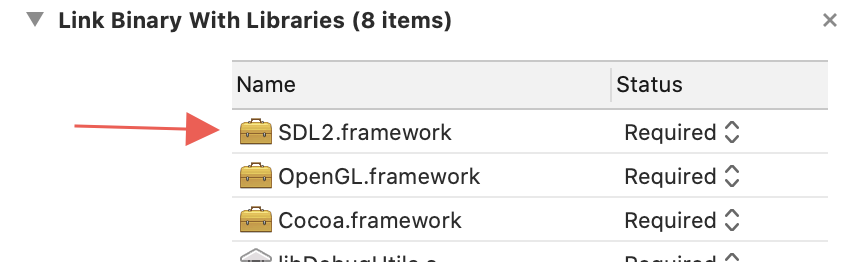
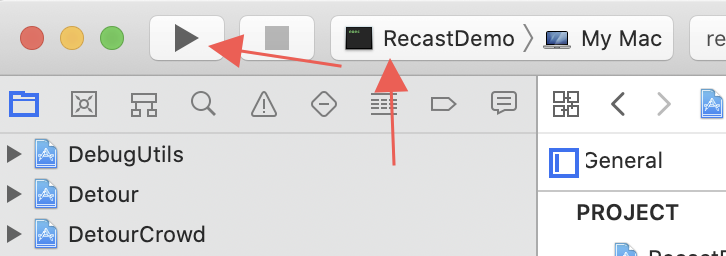
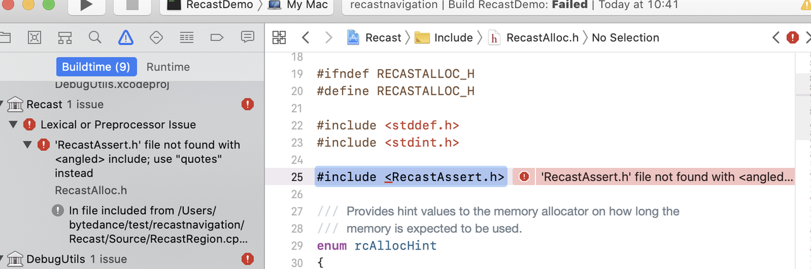
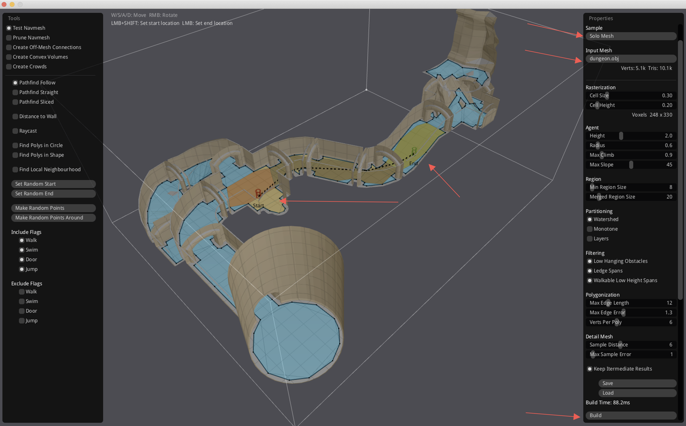
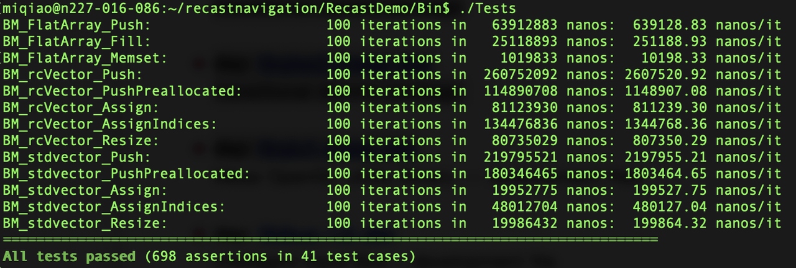

<!DOCTYPE html>
<html lang="zh">
<head>
    <meta charset="UTF-8">
    <meta http-equiv="X-UA-Compatible" content="IE=edge">
    <meta name="renderer" content="webkit">
    <meta name="viewport" content="width=device-width, initial-scale=1, maximum-scale=1, user-scalable=no">
    <meta name="google-site-verification" content="TZE0rZyIqLl10trYu3BWBWa1Vmz6HFwhb2OcNEK4u-s" />
     <link rel="shortcut icon" href= /img/atm.png >
    <title>
        游戏程序猿的生活
    </title>
    <meta name="description" content= 为做一款好游戏而努力奋斗~(ง •̀_•́)ง >
    <meta name="keywords" content= Blog,Hexo,Game,Code >
    
<link rel="stylesheet" href="/libs/highlight/styles/monokai-sublime.css">

    
<link rel="stylesheet" href="/libs/font-awesome/css/font-awesome.min.css">

    
<link rel="stylesheet" href="/css/style.css">

<meta name="generator" content="Hexo 5.4.0"></head>
<body id="bodyx">
    <div class="hd posts">
    <a href="/index.html"><i class="fa fa-home
 replay-btn" aria-hidden="true"></i></a>
    <div class="post-title">
        <p>
            RecastNavigation安装记录
        </p>
        <hr>
    </div>
    <div class="post-content">
        <p>Github: <a target="_blank" rel="noopener" href="https://github.com/recastnavigation/recastnavigation">RecastNavigation</a></p>
<h1 id="模块"><a href="#模块" class="headerlink" title="模块"></a>模块</h1><ol>
<li>Recast：负责根据提供的模型生成导航网格。</li>
<li>Detour：利用导航网格做寻路操作。</li>
<li>DetourCrowd：提供了群体寻路行为的功能。</li>
<li>Recast Demo：一个很完善的Demo，演示了这个开源库能做的所有功能。</li>
</ol>
<h1 id="入手点"><a href="#入手点" class="headerlink" title="入手点"></a>入手点</h1><h2 id="RecastDemo中生成导航网格的相关代码："><a href="#RecastDemo中生成导航网格的相关代码：" class="headerlink" title="RecastDemo中生成导航网格的相关代码："></a>RecastDemo中生成导航网格的相关代码：</h2><figure class="highlight plain"><table><tr><td class="gutter"><pre><span class="line">1</span><br><span class="line">2</span><br><span class="line">3</span><br><span class="line">4</span><br><span class="line">5</span><br><span class="line">6</span><br><span class="line">7</span><br><span class="line">8</span><br></pre></td><td class="code"><pre><span class="line">&#x2F;&#x2F; recastnavigation&#x2F;RecastDemo&#x2F;Source&#x2F;Sample_SoloMesh.cpp:371</span><br><span class="line">bool Sample_SoloMesh::handleBuild()</span><br><span class="line"></span><br><span class="line">&#x2F;&#x2F; recastnavigation&#x2F;RecastDemo&#x2F;Source&#x2F;Sample_TileMesh.cpp:590</span><br><span class="line">bool Sample_TileMesh::handleBuild()</span><br><span class="line"></span><br><span class="line">&#x2F;&#x2F; recastnavigation&#x2F;RecastDemo&#x2F;Source&#x2F;Sample_TempObstacles.cpp:1194</span><br><span class="line">bool Sample_TempObstacles::handleBuild()</span><br></pre></td></tr></table></figure>

<h2 id="RecastDemo中寻路的相关代码："><a href="#RecastDemo中寻路的相关代码：" class="headerlink" title="RecastDemo中寻路的相关代码："></a>RecastDemo中寻路的相关代码：</h2><figure class="highlight plain"><table><tr><td class="gutter"><pre><span class="line">1</span><br><span class="line">2</span><br></pre></td><td class="code"><pre><span class="line">&#x2F;&#x2F; recastnavigation&#x2F;RecastDemo&#x2F;Source&#x2F;NavMeshTesterTool.cpp:681</span><br><span class="line">void NavMeshTesterTool::recalc()</span><br></pre></td></tr></table></figure>

<h1 id="编译指引"><a href="#编译指引" class="headerlink" title="编译指引"></a>编译指引</h1><h2 id="Mac："><a href="#Mac：" class="headerlink" title="Mac："></a>Mac：</h2><ol>
<li>下载<a target="_blank" rel="noopener" href="https://premake.github.io/download.html">Premake5</a>，放到/usr/local/bin目录下</li>
<li>下载<a target="_blank" rel="noopener" href="https://www.libsdl.org/download-2.0.php">SDL2</a>，将安装包中的SDL2.framework文件夹放到/Library/Frameworks下</li>
<li>拉源码，git clone <a target="_blank" rel="noopener" href="https://github.com/recastnavigation/recastnavigation.git">https://github.com/recastnavigation/recastnavigation.git</a></li>
<li>切到RecastDemo目录下执行命令1premake5 xcode4</li>
<li>用Xcode打开工程RecastDemo/Build/xcode4/recastnavigation.xcworkspace</li>
<li>如下图所示，删掉这个白色的SDL2</li>
<li>然后选到第2步的这个SDL2文件夹

</li>
<li>Target选到RecastDemo，开搞～</li>
<li>如果遇到这个报错，说找不到RecastAssert.h，可尝试将它改成#include “RecastAssert.h”</li>
<li>然后这个Demo就跑起来了，选一个Sample，选一个Input Mesh，然后点Build，接下来就可以在地图中随意选择Start点(双指点击)和End点(单指点击)，就能显示导航路径了，更多功能慢慢探索吧。</li>
</ol>
<h2 id="Linux："><a href="#Linux：" class="headerlink" title="Linux："></a>Linux：</h2><ol>
<li>切root，开发机上sudo -i</li>
<li>安装SDL2，官方说每个Linux发行版到安装方式可能不同，此处给出Debian的，因为我的开发机是安装的Debian～哈哈哈～命令如下，如果提示有其他依赖，依次安装即可<br>apt-get install libsdl2-dev<br>我安装的时候提示缺少了这几个，也需要装一下<br>apt-get install libegl1-mesa-dev libgl1-mesa-dev libgles2-mesa-dev libglu1-mesa-dev libsdl2-dev</li>
<li>下载<a target="_blank" rel="noopener" href="https://premake.github.io/download.html">Premake5</a>，放到/usr/bin/目录下</li>
<li>切到RecastDemo目录，执行premake5 gmake</li>
<li>切到RecastDemo/Build/gmake目录下执行命令make</li>
<li>如果遇到以下报错，需要更新gcc到8或以上的版本<br>cc1plus: error: -Werror=class-memaccess: no option -Wclass-memaccess<br>Debian jessie 安装更新gcc：<br>/etc/apt/sources.list增加一行<br>deb <a target="_blank" rel="noopener" href="http://ftp.de.debian.org/debian">http://ftp.de.debian.org/debian</a> sid main<br>然后<br>apt-get update<br>apt-get install build-essential</li>
<li>然后可以跑一下可执行文件./RecastDemo/Bin/Tests，看到All tests passed就OK了～</li>
</ol>
<script type="text/javascript" src="https://cdn.jsdelivr.net/npm/kity@2.0.4/dist/kity.min.js"></script><script type="text/javascript" src="https://cdn.jsdelivr.net/npm/kityminder-core@1.4.50/dist/kityminder.core.min.js"></script><script defer="true" type="text/javascript" src="https://cdn.jsdelivr.net/npm/hexo-simple-mindmap@0.2.0/dist/mindmap.min.js"></script><link rel="stylesheet" type="text/css" href="https://cdn.jsdelivr.net/npm/hexo-simple-mindmap@0.2.0/dist/mindmap.min.css">
    </div>

    
        <hr class="fhr">
        <div id="vcomments"></div>
    
</div>
    <div class="footer" id="footer">
    <p><h4>Copyright © 2020 | Author: ScorpioQ | Theme By <a class="theme-author" target="_blank" rel="noopener" href="https://github.com/Xunzhuo/hexo-theme-coder" style="font-size:14px; color: #969696">Coder</a></h4>
    <label class="el-switch el-switch-blue el-switch-sm" style="vertical-align: sub;">
        <input type="checkbox" name="switch" id="update_style">
        <span class="el-switch-style"></span>
    </label>
    <!--         <script type="text/javascript">
    var cnzz_protocol = (("https:" == document.location.protocol) ? "https://" : "http://");
    document.write(unescape("%3Cspan id='cnzz_stat_icon_1278548644'%3E%3C/span%3E%3Cscript src='" + cnzz_protocol + "v1.cnzz.com/stat.php%3Fid%3D1278548644%26show%3Dpic1' type='text/javascript'%3E%3C/script%3E"));
    </script> -->
</p>
</div>
<input type="hidden" id="web_style" value="light">
<input type="hidden" id="valine_appid" value="QwXsKOoqig9bEiYhIUQxbq3n-gzGzoHsz">
<input type="hidden" id="valine_appKey" value="4xLldbWzOBmFzuIMFwpuipqQ">

<script src="/libs/jquery.min.js"></script>


<script src="/libs/highlight/highlight.pack.js"></script>

<script src='//cdn.jsdelivr.net/npm/valine@1.3.10/dist/Valine.min.js'></script>

<script src="/js/js.js"></script>

<style type="text/css">
.v * {
color: #698fca;
}
.v .vlist .vcard .vhead .vsys {
color: #3a3e4a;
}
.v .vlist .vcard .vh .vmeta .vat {
color: #638fd5;
}
.v .vlist .vcard .vhead .vnick {
color: #6ba1ff;
}
.v a {
color: #8696b1;
}
.v .vlist .vcard .vhead .vnick:hover {
color: #669bfc;
}
</style>
    <script type="text/javascript" color="173,174,173" opacity='1' zIndex="-2" count="99" src="//cdn.bootcss.com/canvas-nest.js/1.0.0/canvas-nest.min.js"></script>
</body>
</html>
